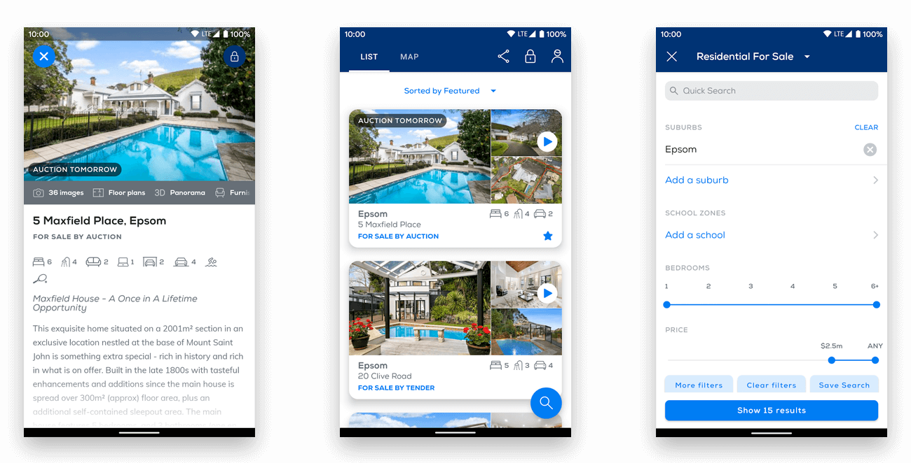
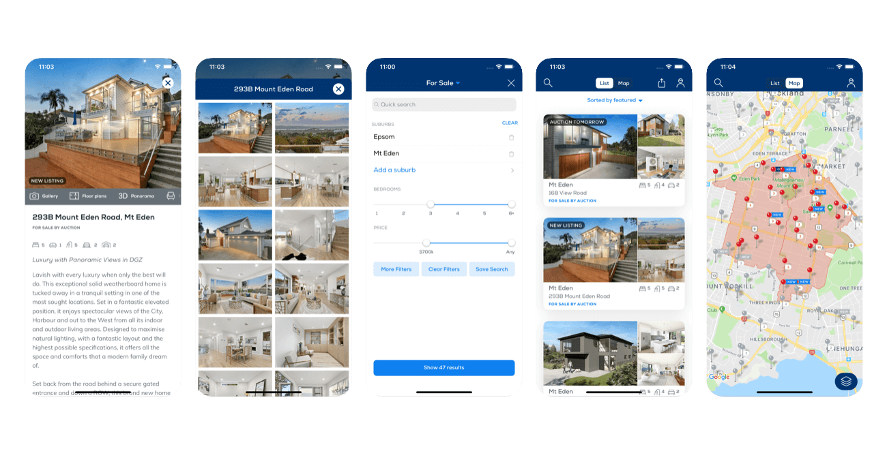
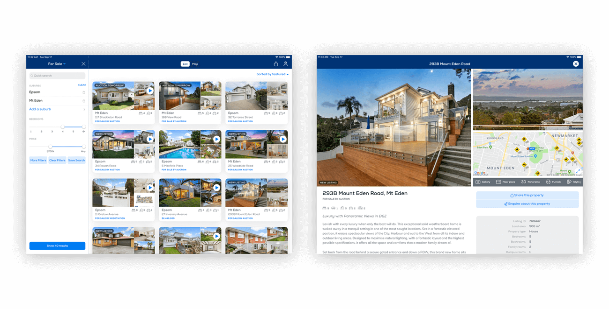

Here are a few projects I have worked on recently.
In time I'll create case studies for the most interesting ones.
Improving design consistency, standards and user experience.
Project started June 2019 and deployed October 1, 2019. The iPad app was over 5 years old.
UX consultation with Cactuslab & JSA who designed and built Barfoot & Thompson iOs and Android apps.
A cleaner, more modern aesthetic respecting OS UI and patterns. Improved UX consistent with barfoot.co.nz.
Being the voice for all Barfoot & Thompson digital products during company rebrand.
Barfoot & Thompson made the decision in late 2018 to rebrand the company. BIG Communications developed the new visual identity. The undertaking would be the most comprehensive rebrand of the company in 40 years.
The project started early 2019 went live midnight October 1, 2019. The iPad app was over 5 years old.
Consult with BIG Communications and the internal marketing team to apply the new identity to all digital products internal and external.
All public facing digital products went live midnight October 1, 2019 with no rollbacks. Internal products were completed before November 1.
Redesign internal legacy web applications using google material design principals.
Redesign legacy web apps according to Material Design principals. Apps to be designed on case by case basis with planning for the larger suite
All UX/UI and user testing. Strategy and research for Material design and advocating the design system.
Currently two new apps have been deployed. User feedback has been excellent and the component library is growing for rapid development in future projects.
A personal project to enhance my photoshop skills.
While I practise UX design my original design degree majored in industrial design. I primarily work on software these days but still have an affinity for product. Upon seeing an incredible photoshop rendering by Scott Robertson I decided to try a project of my own.
My foundational Photoshop skills were solid but I wanted to explore the newer features in Photoshop CC.
All sketches, wireframes, illustration and rendering. Up skilling via lynda.com online tutorials.
Significant improvement to skills and speed - and a welcome change from UI! See the high resolution file.